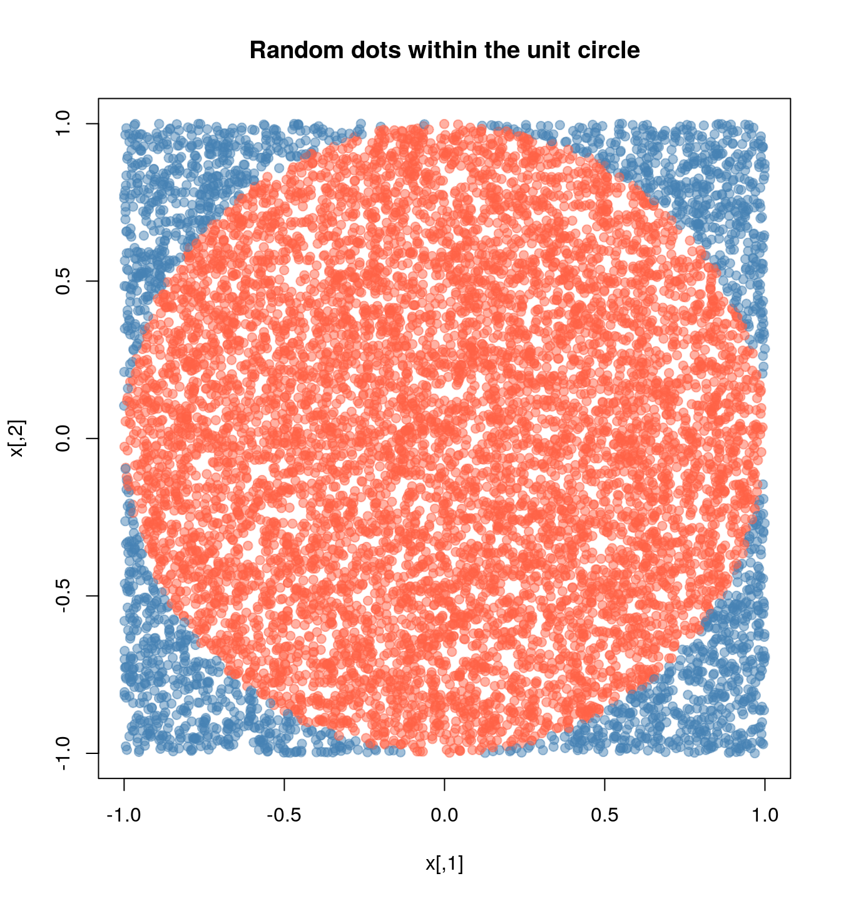

This is the same old example that lots of people (including me) have been using to ilustrate parallel computing with R. The example is very simple, we want to approximate pi by doing some Monte Carlo simulations.
We know that the area of a circle is \(A = \pi r^2\), which is equivalent to say \(\pi = A/r^2\), so, if we can approximate the Area of a circle, then we can approximate \(\pi\). How do we do this?
Using montecarlo experiments, we have that the probability that a random point \(x\) falls within the unit circle can be approximated using the following formula
\[ \hat p = \frac{1}{n}\sum_i \mathbf{1}(x \in \mbox{Circle}) \]
This approximation, \(\hat p\), multiplied by the area of the escribed square, which has an area equal to \((2\times r)^2\), thus, we can finally write
\[ \hat \pi = \hat p \times (2\times r)^2 / r^2 = 4 \hat p \]
The main way that we will be working is submitting jobs using the sbatch function. This function takes as a main argument a bash file with the program to execute. In the case of R, a regular bash file looks something like this:
#!/bin/sh
#SBATCH --job-name=sapply
#SBATCH --time=01:00:00
module load usc r
Rscript --vanilla 01-sapply.RThis file has three components:
The Slurm flags #SBATCH.
Loading R module load usc and module load r.
Executing the R script.
To submit a job the to queue, we need to enter the following:
sbatch 01-sapply.slurmThe following examples have two files, a bash script and a R script to be called by Slurm.
The most basic way is submitting a job using the sbatch command. Im this case you need to have 2 files: (1) An R script, and (2) a bash script. e.g.
The contents of the R script (01-sapply.R) are:
# Model parameters
nsims <- 1e3
n <- 1e4
# Function to simulate pi
simpi <- function(i) {
p <- matrix(runif(n*2, -1, 1), ncol = 2)
mean(sqrt(rowSums(p^2)) <= 1) * 4
}
# Approximation
set.seed(12322)
ans <- sapply(1:nsims, simpi)
saveRDS(ans, "01-sapply.rds")The contents of the bashfile (01-sapply.slurm) are:
#!/bin/sh
#SBATCH --job-name=sapply
#SBATCH --time=01:00:00
module load usc r
Rscript --vanilla 01-sapply.RNow, imagine that we would like to use more than one processor for this job, using something like the parallel::mclapply function from the parallel package. Then, besides of adapting the code, we need to tell Slurm that we are using more than one core per-task, as the following example:
R script (02-mclapply.R):
# Model parameters
nsims <- 1e3
n <- 1e4
ncores <- 4L
# Function to simulate pi
simpi <- function(i) {
p <- matrix(runif(n*2, -1, 1), ncol = 2)
mean(sqrt(rowSums(p^2)) <= 1) * 4
}
# Approximation
set.seed(12322)
ans <- parallel::mclapply(1:nsims, simpi, mc.cores = ncores)
ans <- unlist(ans)
saveRDS(ans, "02-mclpply.rds")Bashfile (02-mclapply.slurm):
#!/bin/sh
#SBATCH --job-name=mclapply
#SBATCH --time=01:00:00
#SBATCH --cpus-per-task=4
module load usc r
Rscript --vanilla 02-mclapply.RIn this case, there is no simple way to submit a multinodal job to Slurm… unless you use the slurmR package (see installation instructions here)
Once you have the slurmR package in your system, you can proceed as follow
R script (03-parsapply-slurmr.R):
# Model parameters
nsims <- 1e3
n <- 1e4
ncores <- 4L
# Function to simulate pi
simpi <- function(i) {
p <- matrix(runif(n*2, -1, 1), ncol = 2)
mean(sqrt(rowSums(p^2)) <= 1) * 4
}
# Setting up slurmR
library(slurmR) # This also loads the parallel package
# Making the cluster, and exporting the variables
cl <- makeSlurmCluster(ncores)
# Approximation
clusterExport(cl, c("n", "simpi"))
ans <- parSapply(cl, 1:nsims, simpi)
# Closing connection
stopCluster(cl)
saveRDS(ans, "03-parsapply-slurmr.rds")Bashfile (03-parsapply-slurmr.slurm):
#!/bin/sh
#SBATCH --job-name=parsapply
#SBATCH --time=01:00:00
module load usc r
Rscript --vanilla 03-parsapply-slurmr.RAnother way to submit jobs is using job arrays. A job array is essentially a job that is repreated njobs times with the same configuration. The main difference between replicates is what you do with the SLURM_ARRAY_TASK_ID environment variable. This variable is defined within each replicate and can be used to make the “subjob” depending on that.
Here is a quick example using R
ID <- Sys.getenv("SLURM_ARRAY_TASK_ID")
if (ID == 1) {
...[do this]...
} else if (ID == 2) {
...[do that]...
}The slurmR R package makes submitting job arrays easy. Again, with the simulation of pi, we can do it in the following way:
R script (04-slurm_sapply.R):
# Model parameters
nsims <- 1e3
n <- 1e4
# ncores <- 4L
njobs <- 4L
# Function to simulate pi
simpi <- function(i, n.) {
p <- matrix(runif(n.*2, -1, 1), ncol = 2)
mean(sqrt(rowSums(p^2)) <= 1) * 4
}
# Setting up slurmR
library(slurmR) # This also loads the parallel package
# Approximation
ans <- Slurm_sapply(
1:nsims, simpi,
n. = n,
njobs = njobs,
plan = "collect",
tmp_path = "/scratch/vegayon" # This is where all temp files will be exported
)
saveRDS(ans, "04-slurm_sapply.rds")Bashfile (04-slurm_sapply.slurm):
#!/bin/sh
#SBATCH --job-name=slurm_sapply
#SBATCH --time=01:00:00
module load usc r
Rscript --vanilla 04-slurm_sapply.ROne of the main benefits of using this approach instead of the the makeSlurmCluster function (and thus, working with a SOCK cluster) are:
The number of jobs is not limited here (only by the admin, but not by R).
If a job fails, then we can re-run it using sbatch once again (see example here).
You can check the individual logs of each process using the function Slurm_lob().
You can submit the job and quick the R session without waiting for it to finalize. You can always read back the job using the function read_slurm_job([path-to-the-temp])
The slurmR package has a function named sourceSlurm that can be used to avoid creating the .slurm file. The user can add the SBATCH options to the top of the R script (including the #!/bin/sh line) and submit the job from within R as follows:
R script (05-sapply.R):
#!/bin/sh
#SBATCH --job-name=sapply-sourceSlurm
#SBATCH --time=01:00:00
# Model parameters
nsims <- 1e3
n <- 1e4
# Function to simulate pi
simpi <- function(i) {
p <- matrix(runif(n*2, -1, 1), ncol = 2)
mean(sqrt(rowSums(p^2)) <= 1) * 4
}
# Approximation
set.seed(12322)
ans <- sapply(1:nsims, simpi)
saveRDS(ans, "05-sapply.rds")From the R console (is OK if you are in the Head node)
slurmR::sourceSlurm("05-sapply.R")And voilá! A temporary bash file will be generated and used submit the R script to the queue.